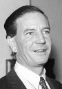

Soğuk savaşın en ünlü casuslarından Kim Philby (1912–1988), İngiliz gizli servisinin üst düzey yöneticilerindendi. Yaklaşık yirmi yıl boyunca gizlice KGB için çalıştı. Philby’nin ihaneti, İngiliz kamuoyunda şok etkisi yarattı. Yaptıkları ortaya çıktığında SSCB için büyük bir propaganda malzemesi haline geldi. Hayatı ve ihaneti pek çok casus romanına ve filmine konu oldu. Kendisi de eski bir İngiliz casus olan John le Carré (1931–) romanlarında onun öyküsünü konu aldı.

Harold A. R. Philby, Hindistan’da doğmuştu. Bir İngiliz sömürge yöneticisinin oğluydu. Prestijli okullara gitti. Daha sonra Cambridge Üniversitesi’nde eğitim aldı ve üniversitede öğrenciyken komünizme sempati duymaya başladı. Philby ve başka bazı Cambridge öğrencileri, Sovyet gizli servisine girdiler. Gizli bir grup oluşturmuşlardı. Daha sonra onlara “Cambridge casusluk halkası” adı verilecekti.
Philby ve diğer casusların uzun vadeli bir görevi vardı: İngiliz gizli servisine sızmak, üst düzey konumlara yükselmek ve Moskova’ya rapor yollamak. Philby İspanya İç Savaşı sırasında bir İngiliz gazetesi için çalıştı. II. Dünya Savaşı başlayınca İngiliz Gizli Servisi’ne katıldı. Bu arada Sovyet görevlilerine bilgi vermeye devam ediyordu.
Savaş sırasında ve sonrasında çeşitli kereler terfi ettirildi. Bir keresinde gizli servisin Sovyet istihbaratından sorumlu ofisinin başına bile getirilmişti. 1949 yılında Washington DC’deki İngiltere elçiliğine yollandı. Burada CIA ile İngiltere arasında bağlantı görevi görecekti. Böylece daha sonra Moskova’ya servis edeceği pek çok gizli servis dökümanına giriş izni sağladı.
1950’lerden itibaren Philby’nin şansı kötüye dönmeye başladı. Cambridge’teki iki casus deşifre olmuştu. Yakalanmalarından önce Philby onları uyarmış ve böylece SSCB’ye kaçmayı başarmışlardı. Onlarla olan dostluğu bilindiği için artık Philby de şüphe altındaydı. Çetenin “üçüncü adamı” olduğu düşünüldüğü için yoğun bir biçimde sorgulandı (Gerçekte ise halkanın beş üyesi vardı. Son üye 1970’lere kadar bulunamayacaktı). Philby sonunda temize çıkmayı başardı ve gayri resmi olarak İngiliz casusluk birimleri için çalışmaya devam etti.
1963 yılının sonunda SSCB hesabına çalıştığı anlaşıldı. Bunun üzerine hayatının kalan kısmını geçireceği SSCB’ye kaçtı. Yetmiş altı yaşında Moskova’da öldü.
Ek Bilgiler
1- Çocukken ona İngiliz yazar Rudyard Kipling’in (1865–1936) romanındaki bir karakterden esinlenerek “Kim” diyorlardı.
2- Philby’nin II. Dünya Savaşı yıllarındaki ajanları arasında Graham Greene (1904–1991) ve Malcolm Muggeridge (1903–1990) gibi isimler de vardı. Bunların her ikisi de daha sonra ünlü yazarlar olacaktı. Philby sürgündeyken bile Greene ile olan ilişkisini devam ettirdi.
3- 1990 yılında Philby’nin resmi, bir Sovyet posta puluna basıldı.